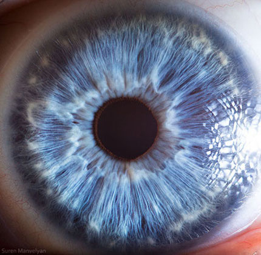

Mule Deer: 34kb
Eyeball: 51kb
Mule Deer: 303kb
Eyeball: 305kb
Mule Deer: 160kb
Eyeball: 148kb
Images of format .jpg or .png are pretty much the same as far as quality for this particular website. The .gif images look similar too, but you can tell that some quality was lost during the conversion, but only if you zoom in really close. You can notice the colors do not transition quite as smoothly. I would probably use the .jpg most often than not in the websites since you can save a lot of space and not much quality is lost.(at least from what we can tell with our own eyes)
(Transparent JPG) (Transparent GIF)
PNG is typically the largest extension that there is which allows for high quality photos with the use of many colors. (more than GIF) PNG is lossless compression which implies that quality is not lost through compression. PNG takes a lot more space than JPG though. JPG is lossy compression which means that data/quality is given up through compression, but it is very effective to use since it takes up much less space than a PNG. GIFS are restricted to many less colors but do not lose data quality just like PNG. (lossless) They support animation but also sacrifice quality since they are limited on colors. (Not reccommended for photography, etc.) To learn more about PNG, JPG and GIFS click here.
See my image map demo here.
To go to main home page, click here